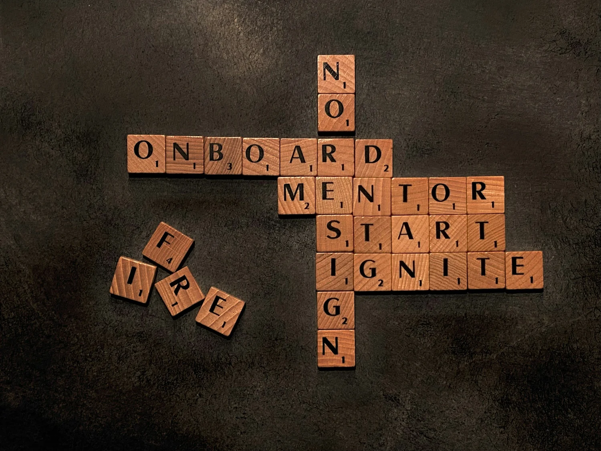

Measurement and message under one roof
We design the metrics, run the analysis, and write the narrative, so the story never outruns the evidence.
Rubrique Advisory Co. pairs academic, research-grade method with the ability to explain findings to a room that does not know what a p-value is.
Look across the higher-education assessment market and you find the same pattern. Nearly every big firm in this space points at one slice of the student journey: recruitment and enrollment. They offer schools a dashboard or a data tool at a premium price, then leave them on their own to work out how to collect data, what they can learn from these tools, and what it means for each institution.
Meanwhile, schools and degrees have started to look alike. What sets an institution apart is no longer the transcript. It is the student-centered, high-impact programming built around career services, study abroad, undergraduate research, fellowships, living-learning communities, honors programs, service and community-based learning, and the like. Colleges are investing in that programming now more than ever, because it enriches a student’s experience and because it is what makes one institution worth choosing over another.
Every higher education leader wants these programs to grow, but that growth should rest on concrete evidence, not on good faith alone. Almost no one in this market treats those programs as key elements of educational outcomes that should be measured, analyzed, and communicated.
That gap is why we founded Rubrique Advisory Co.

Rubrique is led by its founder, Dr. Max Erdemandi, whose background blends communication science and survey methodology with nearly a decade of experience managing federally funded research and educational programs. He leads every engagement as the lead analyst, from data strategy and measurement design through the final narrative.
He is supported by a team with expertise in strategic and institutional communication, qualitative analysis, and quantitative methods.
Behind our team stands our board of advisors. They lend their experience in higher education policy and practice, research methods, and institutional communication, along with the counsel and connections that keep our work aligned with what our clients actually need.
We do not sell expensive software, and we do not hand you a proprietary tool and walk away.
We work with our clients to understand their institutional goals, then help them get the most from their investment in their signature high-impact programs. We take the work end to end: from the questions worth asking, to the measurement strategy, data collection, analysis, and the narratives aimed at your key stakeholders.
We tie our clients’ signature programming to the outcomes their campus leaders care about, the ones their provost and board track, and the ones the federal government and accreditation organizations demand: enrollment and yield, retention and completion, giving, and graduate employment and earnings.
The platforms and consultancies in this market capture and move data. None of them designs the study, chooses the method, defends the inference on a messy question, or writes the honest story that follows. They hand the institution an instrument and assume it has a methodologist on staff to use it. Most small and mid-sized institutions do not. Even large universities are limited in how much of their institutional research capacity they can dedicate to high-impact programming.
That absent methodologist is the role Rubrique Advisory Co. fills. We do not compete with your enrollment or student-success platform. We sit on top of it, and we make it answer the question your board is actually asking, for the signature programs the platform was never built to evaluate.
We design the metrics, run the analysis, and write the narrative, so the story never outruns the evidence.
We judge high-impact programs against the eight conditions research ties to real gains, so “quality” means something before we report on it.
Methods and documentation held to federal reporting standards, without the overhead or the pace of a large firm.
Staff cannot judge their own programs cleanly. We tell the story without the internal loyalties that shape how insiders read their own results.
The simplest way to work with us is a short, fixed-fee Data Readiness Diagnostic, or a conversation about the signature program you most need to prove.